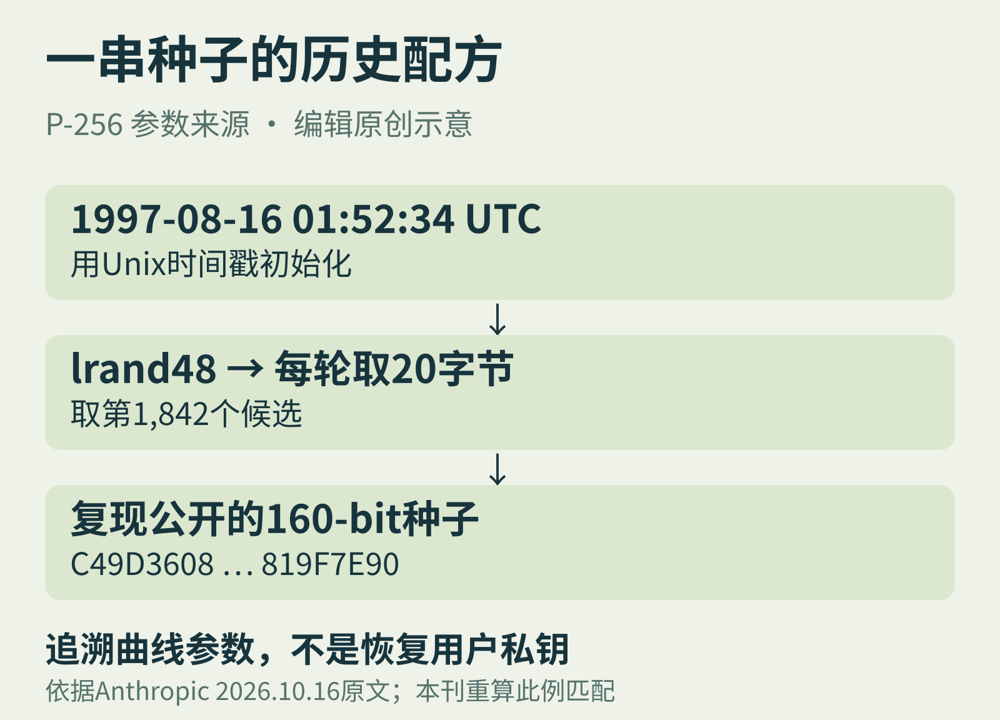

01 / DIGITAL ARCHAEOLOGY 官方研究 · 10月16日
一串种子的来历，
藏在旧时钟里
一桩延续约25年的参数来源悬案，有了能直接重算的答案。

NIST在2000年采用的一组椭圆曲线公布了生成参数所用的种子，却没有说明这些数字从哪来。多年来，研究者甚至沿着“幽默短句的哈希”这条传闻寻找答案。
Anthropic 10月16日称，员工让内部研究模型换个角度调查；Claude在不到半小时内追溯出五个NIST素数曲线种子的来源：旧C库的lrand48伪随机数发生器，加一个Unix时间戳。
把谜底变成一段可检查的计算
以P-256为例：用1997年8月16日01:52:34 UTC初始化，每组采集20字节，第1,842组就得到公开种子。本刊按公开算法独立重算这一例，160-bit结果与标准所列值一致。
“不到半小时”和发现过程属于厂商叙述；数值匹配则可以检查。原文说模型先识别旧生成器的位模式，再借助格基约简恢复截断状态，反向寻找初始化时间。
解开来历，不等于破解密码
恢复的是公开曲线参数的生成来源，不是用户私钥，也不是新的签名攻击。B-163种子、若干基点来源，以及为何跳过部分可行候选仍未解释；不能把结果写成“证明绝无后门”。
编辑观察：最有启发的动作，是暂时放下流传多年的故事，回头问“那个年代的程序员可能写了什么代码”。AI的发现叙事值得关注，可重放的证据更值得留下。